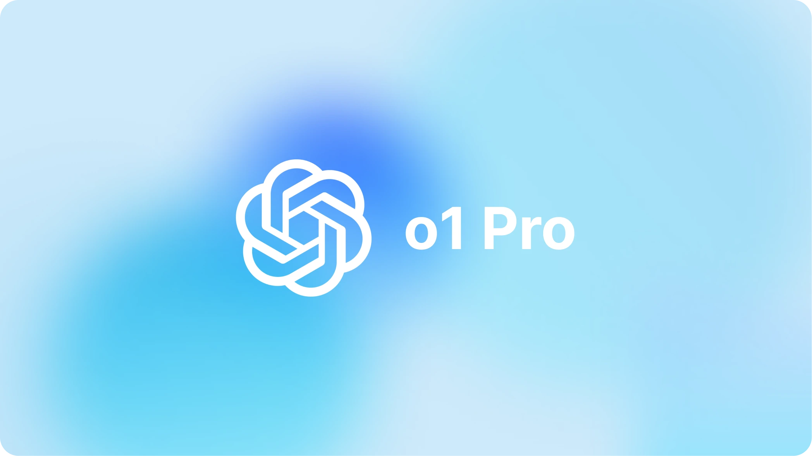

Analysis of OpenAI’s o1-Pro Model
I’ll search for information about OpenAI’s o1-Pro model, focusing on critical perspectives about its features and pricing policy.
Key Features of o1-Pro
The o1-Pro model is designed to provide more reliable and consistent outputs compared to the regular o1 model. It has access to more computing resources which allows it to spend more time on complex reasoning tasks. This is especially beneficial for tasks requiring high precision like mathematics, coding, and scientific problem-solving.
Interestingly, o1-Pro is not actually a different model from o1, but rather uses a special way of implementing the o1 model. According to analysis, it appears to aggregate multiple responses from the o1 model and selects the best answer through a majority voting mechanism. This approach increases reliability but doesn’t necessarily improve the model’s fundamental capabilities.
Critical Analysis of Performance
Several independent evaluations suggest that the performance improvements offered by o1-Pro over the regular o1 model might be minimal and situational:
- In some cases, o1-Pro takes significantly longer to generate responses (over 1 minute compared to 11 seconds for o1), but the quality improvement doesn’t always justify this difference.
- On certain reasoning benchmarks like SimpleBench, o1-Pro surprisingly performed worse than the regular o1 model, getting only 4 out of 10 questions correct compared to 5 out of 10 for o1.
- There are inconsistencies in performance across different types of tasks. While it may excel at mathematical and scientific reasoning, it struggles with creative tasks and certain visual reasoning problems.
Pricing Controversy
The $200 monthly subscription fee has been widely criticized as excessive and potentially exclusionary. Critics argue that this pricing strategy:
- Creates a significant barrier to access, making advanced AI capabilities available only to wealthier individuals and organizations.
- Doesn’t deliver value proportionate to its cost, especially given the sometimes marginal improvements over the standard o1 model.
- Signals a concerning trend toward premium-tier AI services that could exacerbate digital inequality.
OpenAI justifies the high price based on the computational resources required to run the model effectively and reliably, especially for complex problems requiring extended reasoning.
Technical Limitations
Despite its premium positioning, o1-Pro still exhibits significant limitations:
- It struggles with image analysis and abstract reasoning tasks.
- It continues to hallucinate information, albeit at a slightly reduced rate.
- It performs poorly on certain specialized benchmarks, sometimes worse than its predecessors.
This information provides a critical perspective on OpenAI’s o1-Pro model, highlighting both its capabilities and the controversies surrounding its features and pricing policy.
Technical Workings and Cost Structure
o1-Pro isn’t actually a completely different model from regular o1, but rather works by aggregating multiple answers from o1 and selecting the best answer by majority vote. The number of tokens generated in this process is more than 10 times higher than in the normal model, which significantly increases the cost. This “special usage” has been noted by OpenAI’s top researchers, and is not really a new model, but rather a difference in how an existing model is utilized.
Specifics of the API Pricing Policy
The API pricing is set at $150 per million input tokens and $600 per million output tokens, which is significantly higher than GPT-4.5 ($75) and Grok 3 ($25). These high prices are also significantly higher than OpenAI’s other AI models.
Release Schedule and Availability
o1-Pro was initially released exclusively to ChatGPT Enterprise users ($300/month), and has since been extended to Pro and Team subscribers. An API has also been made available for developers, supporting features such as JSON output and function calls. It is currently not accessible to free users, demonstrating that o1-Pro is positioned as a premium product for professionals and organizations.
Comparative Analysis with Other Models
According to a recent comparative analysis, o1 (including Mini/Pro) specializes in deep logical reasoning and hard problem solving, but it suffers from response delays and high cost, making it unsuitable for creative uses. GPT-4o, on the other hand, has the advantages of multimodal response, fast response, low cost, and good creative expression, making it suitable for general use and creative work.
The o1-Pro excels in precision, especially when compared to Anthropic’s Claude 3.7 Sonnet and xAI’s Grok 3, but lacks the interactive flexibility and versatility of the Grok 3 and GPT-4.5. In fact, the recently announced o3 Mini shows an overall improvement over O1, offering a better cost/performance ratio for practicality and flexibility with the ability to adjust inference strength.